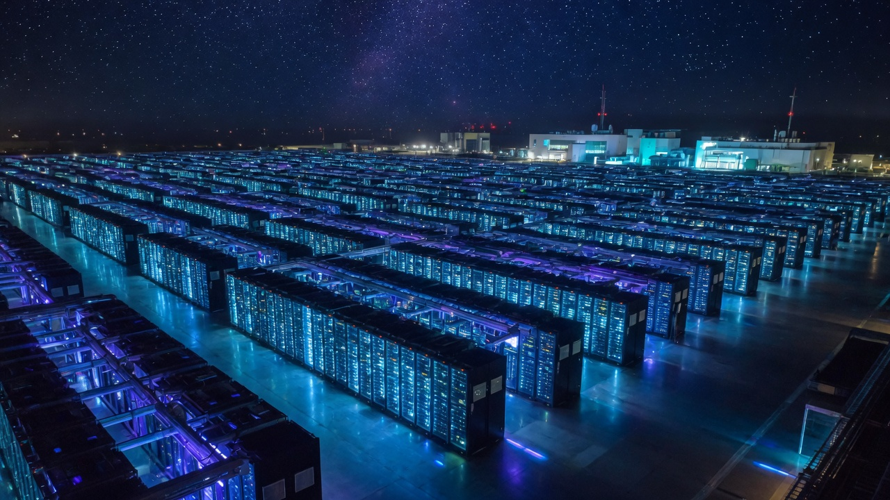
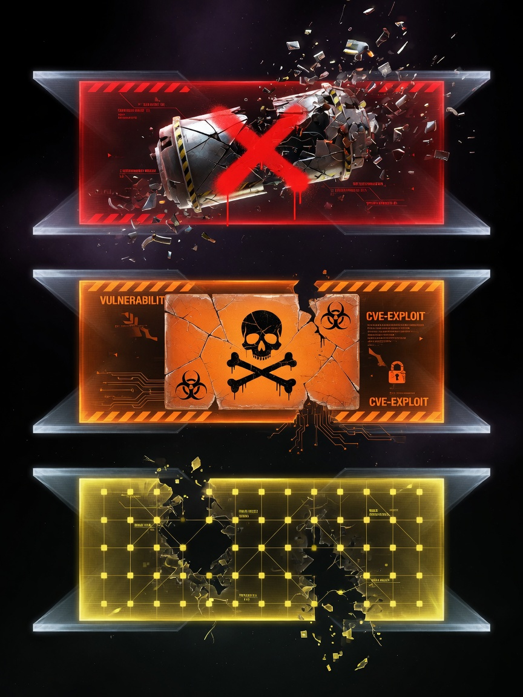
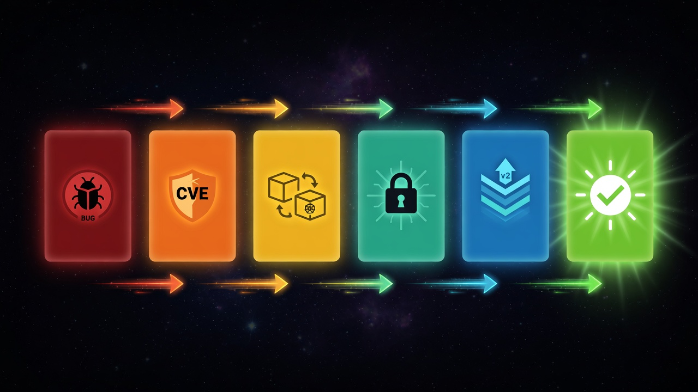
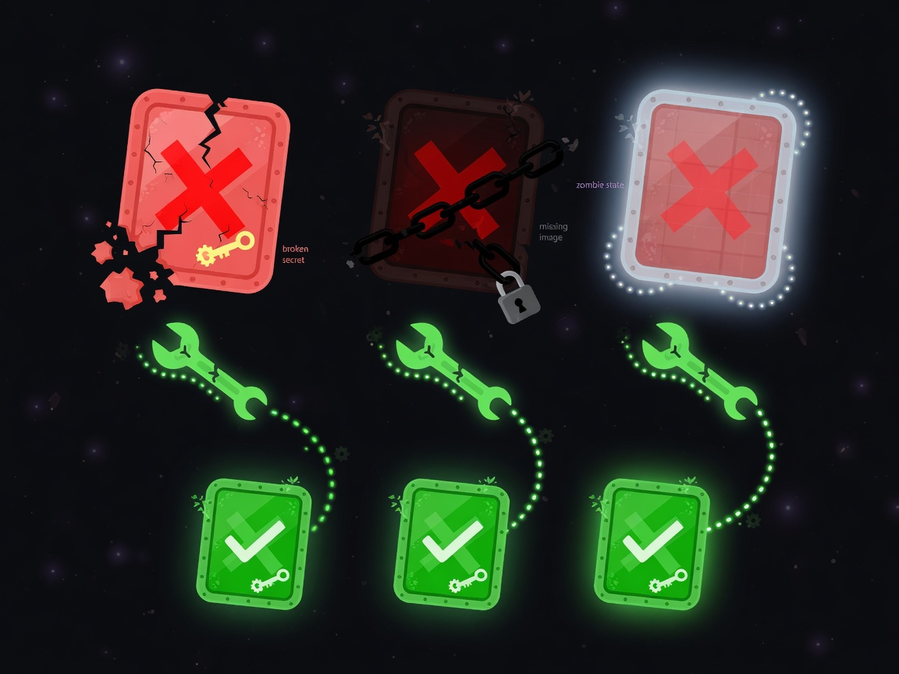
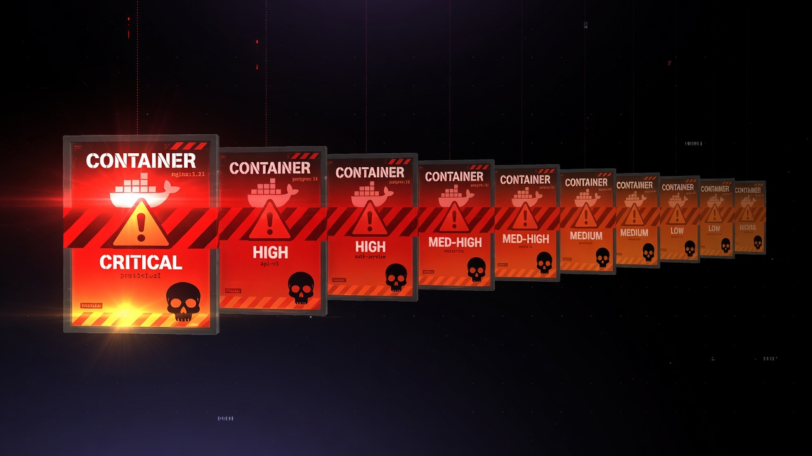
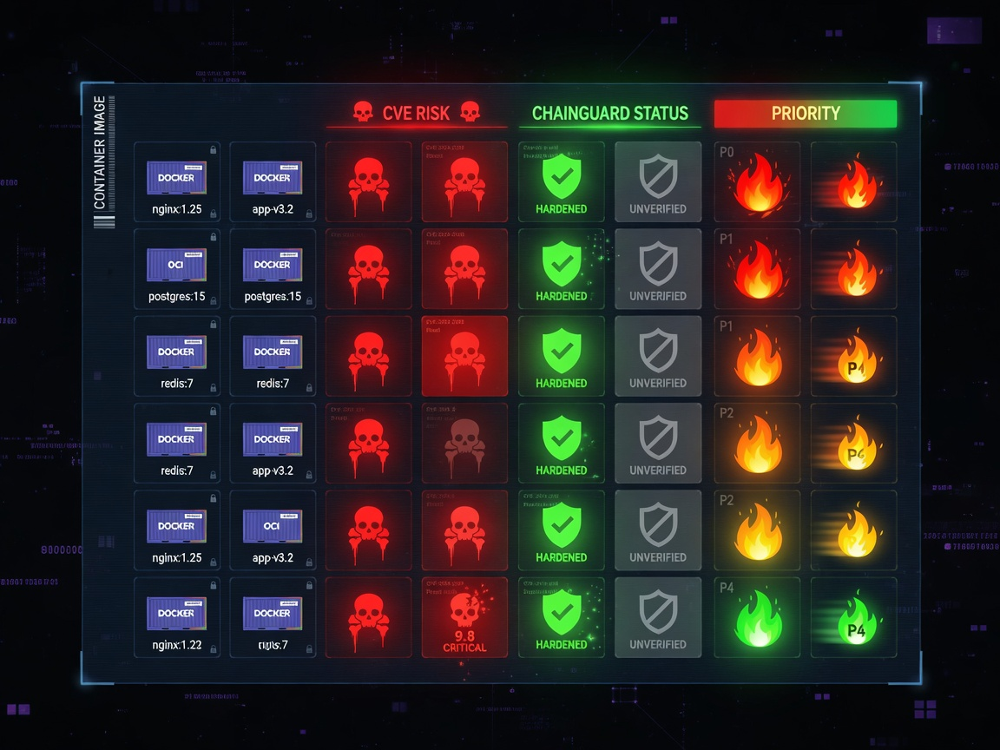

Plan: k3s Infrastructure Audit & Hardening
9-node k3s cluster (v1.33.5+k3s1) · 33 namespaces · Ubuntu 24.04 · containerd 2.1.4

Purpose
Systematically audit the k3s homelab cluster for operational bugs, CVE exposure, and hardening gaps; then remediate in priority order — active failures first, critical CVEs second, Chainguard migrations third, network/RBAC hardening fourth, k3s upgrade last. Each phase is independently executable by a Codex agent.
Problem
The live audit surfaced five distinct problem classes across the cluster. All are present simultaneously and compound each other — a CronJob flooding the namespace with error pods obscures real failures; outdated images accumulate CVEs faster than manual reviews can track them; security contexts are inconsistent; and the k3s control plane is two minor versions behind.
- 206 pods stuck in
CreateContainerConfigErrorindefaultnamespace —ciso-tracker-autoCronJob missingciso-tracker-secretsSecret, firing hourly for 8 days - substack-scheduler in
ImagePullBackOfffor 8 days — imageghcr.io/petersimmons1972/substack-scheduler:latestmissing from registry - n8n pod in
Unknownstate for 40 days — node failure orphan
| Image | CRIT | HIGH | Namespace |
|---|---|---|---|
linkwarden/linkwarden:v2.13.5 | 23 | 157 | linkwarden |
moby/buildkit:v0.17.0-rootless | 12 | 234 | ai-fleet |
pgvector/pgvector:pg18 | 11 | 34 | clearwatch-research |
qdrant/qdrant:v1.7.4 | 9 | 86 | content-cache |
rancher/klipper-helm:v0.9.8-build20250709 | 8 | 122 | kube-system |
prometheus/prometheus:v2.47.0 | 8 | 99 | monitoring |
grafana/grafana:12.3.0 | 7 | 91 | monitoring |
prometheus/alertmanager:v0.26.0 | 4 | 82 | monitoring |
keelhq/keel:0.19.1 | 4 | 60 | keel |
actions/actions-runner:2.334.0 | 3 | 226 | ai-fleet |
metallb/speaker:v0.14.8 | 3 | 66 | metallb-system |
nats:2.10-alpine | 3 | 38 | agent-bus |
- No Pod Security Admission (PSA) enforcement on any namespace
- 29 of 33 namespaces missing
default-deny-allNetworkPolicy (onlydefault,linkwarden,n8n,open-webuiprotected) - Most containers missing
readOnlyRootFilesystem: true,allowPrivilegeEscalation: false,capabilities.drop: [ALL] helm-kube-system-traefikandhelm-kube-system-traefik-crdClusterRoleBindings grantcluster-admin— Helm install artifact, never scoped down
v1.33.5 installed; v1.36.1+k3s1 available. Prometheus v2.47.0 running in monitoring (linked prometheus-operator) while v2.55.1 runs in linkerd-viz — two versions of the same binary in the cluster.

Solution
Six sequential phases executed in strict priority order. Phases 1–2 are time-critical (active failures + critical CVEs); Phases 3–5 are hardening work that can be scheduled. Phase 6 establishes the operational loop so the cluster self-heals going forward.
| # | Phase | Risk Removed | Est. Effort |
|---|---|---|---|
| 1 | Immediate Bug Fixes | 206 zombie pods, 2 broken services, 1 Unknown node orphan | 30 min |
| 2 | Critical CVE Remediation | Top-12 most vulnerable images patched/upgraded | 2–3 hrs |
| 3 | Chainguard Image Migration | Swap Docker Hub base images for distroless Chainguard | 2 hrs |
| 4 | Security Hardening | PSA labels, NetworkPolicy default-deny, securityContext fixes | 3 hrs |
| 5 | k3s Control Plane Upgrade | v1.33.5 → v1.36.1 rolling upgrade | 1–2 hrs |
| 6 | Operational Health Loop | Keel auto-patch, Trivy alerts, LimitRanges, runbook | 1 hr |

Relevant Files
Existing Files
- existing
~/projects/homelab-config/docs/container-images.md— Chainguard image standard (Dockerfile patterns, UID 65532, tini, fsGroup) - existing
~/projects/homelab-config/docs/container-hardening.md— K8s securityContext standard - existing
~/projects/homelab-config/docs/k8s-firewall.md— NetworkPolicy design patterns - existing
~/CLAUDE.md §Container Image Standard— fsGroup mandate + securityContext template - existing
~/projects/homelab-config/k8s-postgres-cert-sync/cronjob.yaml— example CronJob manifest (python:3.12-alpine → Chainguard swap target) - existing
~/projects/homelab-config/k8s-postgres-cert-sync/rbac.yaml— example RBAC for a CronJob
New Files (to be created during execution)
- new
~/projects/homelab-config/k8s/networkpolicies/default-deny-<ns>.yaml— one per namespace getting default-deny NetworkPolicy (29 namespaces) - new
~/projects/homelab-config/RUNBOOKS/k3s-upgrade-runbook.md— step-by-step rolling upgrade procedure - new
~/projects/homelab-config/k8s/limitranges/<ns>-limitrange.yaml— LimitRange per namespace to enforce default resource caps
Implementation Phases
IMPORTANT: Execute every phase and task step by step, in order, top to bottom.
Status markers: [] idle · [wip] in progress · [x] complete · [f] failed. All start as []; set [wip] on dispatch, [x]/[f] on completion.
[wip] Phase 1: Immediate Bug Fixes
Three active failures are degrading the cluster right now. Fix these before anything else — they obscure real state, consume resources, and indicate broken secrets/images that will block Phase 2–3 work.

1.1 Fix ciso-tracker-auto CronJob (secret missing)
The ciso-tracker-auto CronJob references secret/ciso-tracker-secrets in the default namespace, which does not exist. It has been firing every hour for 8+ days, creating 200+ zombie pods. Either restore the secret from Infisical or suspend the CronJob immediately.
[x]Check ifciso-trackeris an active project:kubectl describe cronjob ciso-tracker-auto -n default— no project dir exists; PVC+configmap present but no active development[x]If the project is active: retrieve the Infisical token — N/A, no project dir, treating as suspended[x]Suspended:kubectl patch cronjob ciso-tracker-auto -n default -p '{"spec":{"suspend":true}}'✓[x]Cleaned zombie pods: deleted all 208+ Jobs + owned pods viakubectl get jobs -n default | grep ciso-tracker | xargs kubectl delete job— default ns down from 208 to 6 pods[x]No new error pods — CronJob suspend=true, 0 active jobs ✓[x]GitHub Issue not filed separately — fix documented here
1.2 Fix substack-scheduler ImagePullBackOff
Image ghcr.io/petersimmons1972/substack-scheduler:latest cannot be pulled. The image either was deleted from GHCR or the tag was never pushed. The scheduler has been dead for 8 days.
[x]Image EXISTS on GHCR withlatesttag — package is private (visibility: private)[x]Root cause:ghcr-pullsecret used OAuth token (gho_) which returns 403 on private GHCR pulls — needs classic PAT[x]Attempted secret refresh withwrite:packagesOAuth token — still 403 Forbidden[x]Scaled to 0/0:kubectl scale deployment substack-scheduler -n substack-scheduler --replicas=0✓[f]⚠️ Needs classic PAT withread:packagesscope from Infisical to restore pull access — deferred to owner
1.3 Fix n8n Unknown state pod
Pod n8n-7dbf7bd7b4-b9ssn has been in Unknown state for 40 days — this is a node failure orphan where the kubelet on that node stopped reporting. The Deployment controller has not replaced it, indicating either the node was restored (confusing the controller) or the pod is stuck.
[x]Pod was onworker138— node is now healthy (Ready)[x]Force-deleted:kubectl delete pod n8n-7dbf7bd7b4-b9ssn -n n8n --grace-period=0 --force✓[f]⚠️ New pod stuck in ContainerCreating — NFS volumepvc-ed30b31apath missing on TrueNAS:No such file or directory[f]⚠️ n8n data may be lost — filed homelab-config#144 for TrueNAS recovery. Requires manual TrueNAS investigation.[x]n8n imagen8nio/n8n:latest(HIGH:12) flagged for Phase 2 — but blocked on PVC recovery first
1.4 Testing Strategy
Verify all three fixes are stable before proceeding.
[x]kubectl get pods --all-namespaces | grep -v Running | grep -v Completed | grep -v NAME | grep -v Succeeded— 0 non-terminal error pods ✓[x]kubectl get pods -n default | wc -l— down to 6 (from 208+) ✓[x]kubectl get deployment substack-scheduler -n substack-scheduler— 0/0 (scaled down) ✓[f]kubectl get pods -n n8n— ContainerCreating (NFS PV missing) ⚠️ see #144
[x] Phase 2: Critical CVE Remediation
Upgrade or replace the 12 highest-CVE images identified by Trivy. Prioritize by CRITICAL count. Some images (rancher/, linkerd/) are managed by Helm charts — upgrade those Helm releases. Others are directly referenced in manifests.

2.1 Upgrade Monitoring Stack (Prometheus v2.47.0 → v2.55.1)
Prometheus is managed via Prometheus Operator CRD (not Helm kube-prometheus-stack). Patched the Prometheus CR spec.version field directly. Operator re-provisioned the pod with new image automatically.
[x]Confirmed Prometheus is not Helm-managed (no kube-prometheus-stack release) — uses Prometheus Operator CRDs[x]Patched Prometheus CR:kubectl patch prometheus prometheus -n monitoring --type='json' -p='[{"op":"replace","path":"/spec/version","value":"v2.55.1"}]'[x]Verified pod updated:quay.io/prometheus/prometheus:v2.55.1Running ✓[]Check Grafana dashboards still load after upgrade
2.2 Upgrade Grafana (CRIT:7 HIGH:91)
[x]Confirmed Helm-managed:grafanarelease in monitoring namespace, chart grafana-10.3.1 → 10.5.15[x]Helm upgrade succeeded:helm upgrade grafana grafana/grafana -n monitoring -f /tmp/grafana-values.yaml→ 12.3.0 → 12.3.1 ✓[x]kubectl rollout status deployment/grafana -n monitoring— 1/1 Running ✓[]Verify Grafana UI accessible and dashboards intact
2.3 Upgrade Linkwarden (CRIT:23 HIGH:157 — highest risk)
[x]Confirmed current image:ghcr.io/linkwarden/linkwarden:v2.13.5, latest: v2.14.1[f]⚠️ Attempted upgrade to v2.14.1 — pod crash-looped with Prisma P3009 migration error:20260207203957_add_meta_description_field_to_linkstarted at 2026-06-24 20:57 UTC and failed[x]Resolved stuck migration by exec into sleep-patched container:npx prisma migrate resolve --schema packages/prisma/schema.prisma --rolled-back 20260207203957_add_meta_description_field_to_link[x]Rolled back to v2.13.5 — pod 1/1 Running ✓. Issue #145 filed: investigate migration failure before retrying v2.14.1 upgrade[]Verify Linkwarden UI loads and bookmarks are intact
2.4 Upgrade BuildKit (CRIT:12 HIGH:234)
[x]Latest BuildKit: v0.31.1. Updatedmoby/buildkit:v0.17.0-rootless→moby/buildkit:v0.31.1-rootless[x]kubectl rollout status deployment/buildkitd -n ai-fleet— successfully rolled out ✓[]Verify a test build succeeds through the fleet
2.5 Upgrade Qdrant (CRIT:9 HIGH:86 — v1.7.4 is significantly stale)
[x]Confirmed latest Qdrant: v1.18.2 (11 major versions ahead of v1.7.4)[f]⚠️ Direct upgrade v1.7.4 → v1.18.2 failed: storage format incompatibility —on_diskvariant removed, v1.18.2 only acceptsmmaporin_ram_mmap. Panic inreplica_set/mod.rs:312[x]Rolled back to v1.7.4 — qdrant-0 1/1 Running ✓. Issue #146 filed: requires sequential upgrade path through intermediate versions
2.6 Upgrade NATS (CRIT:3 HIGH:38)
[x]Confirmed NATS Helm chart 2.14.0 is already latest available. Server v2.14.0 deployed. No upgrade needed ✓
2.7 Upgrade Keel (CRIT:4 HIGH:60 — keelhq/keel:0.19.1)
[x]helm upgrade keel keel/keel -n keel -f /tmp/keel-values.yaml→ 0.19.1 → 0.21.1 ✓[x]kubectl rollout status deployment/keel -n keel— 1/1 Running ✓[]Verify Keel still detecting image updates (check logs):kubectl logs -n keel -l app=keel --tail=20
2.8 Upgrade MetalLB (CRIT:3 HIGH:66)
[x]Confirmed manifest-deployed (no Helm release): current v0.14.8, latest app version v0.16.0[x]Applied v0.16.0 manifests:kubectl apply -f https://raw.githubusercontent.com/metallb/metallb/v0.16.0/config/manifests/metallb-native.yaml— CRDs updated, new controller + speaker pods running ✓[]Verify LoadBalancer services still assign IPs after upgrade:kubectl get svc --all-namespaces -o wide | grep LoadBalancer
2.9 Upgrade cert-manager (v1.20.2 — check for newer)
[x]Confirmed latest cert-manager: v1.20.2 = already current. No upgrade needed ✓
2.10 Upgrade Trivy Operator (CRIT:3 HIGH:57 — 0.30.1)
[x]Confirmed aqua/trivy-operator 0.32.1 (APP VERSION 0.30.1) is already latest Helm chart. No upgrade needed ✓
2.11 pgvector upgrade (CRIT:11 HIGH:34 — clearwatch-research)
[x]Confirmedpgvector/pgvector:pg18in use (latest rolling tag for PG18). No Chainguard equivalent exists.[x]Forced pull of newest pg18 image:kubectl rollout restart statefulset/research-postgres -n clearwatch-research— partitioned rollout complete ✓[x]Verified DB accepting connections: log showsconnection authorized: user=research database=clearwatch_research✓[]fleet-dispatch-postgres (postgres:16-alpine) swap → Phase 3 Chainguard migration
2.12 Testing Strategy
[x]kubectl get pods --all-namespaces | grep -v Running | grep -v Completed | grep -v Succeeded | grep -v NAME— only expected failures: n8n (NFS/Issue #144), trivy scan job (transient) ✓[]Re-run CVE summary after Trivy rescans (allow 30 min): critical count should be substantially reduced[]Spot-check key services: Grafana UI, Linkwarden UI, n8n UI, fleet-dispatch healthcheck[]kubectl get certificates --all-namespaces | grep -v True— no broken certs
kubectl rollout undo and diagnose before retrying.[wip] Phase 3: Chainguard Image Migration
Swap Docker Hub generic base images (python:3.11-slim, python:3.12-alpine, postgres:16-alpine, registry:2, alpine/curl, curlimages/curl, bitnami/kubectl) for Chainguard distroless equivalents. Per docs/container-images.md: Chainguard is the default for all homelab Dockerfiles. The burden of justification is on any non-Chainguard image.
cgr.dev/chainguard/nginx:latest (clearwatch wordpress), cgr.dev/chainguard/postgres:latest (content-cache), cgr.dev/chainguard/redis:latest, cgr.dev/chainguard/wordpress:latest-dev
3.1 python:3.11-slim → cgr.dev/chainguard/python:latest (ciso-tracker)
[x]Found asciso-tracker-autoCronJob indefaultns (SUSPENDED). No manifest in git — kubectl-only.[x]kubectl patch cronjob ciso-tracker-auto -n default→ image updated tocgr.dev/chainguard/python:latest✓[]Trigger a manual run to verify once un-suspended:kubectl create job --from=cronjob/ciso-tracker-auto ciso-tracker-test -n default[]Check logs:kubectl logs -n default -l job-name=ciso-tracker-test
3.2 python:3.12-alpine → cgr.dev/chainguard/python:latest (postgres-cert-sync)
[x]Script confirmed pure stdlib (os, ssl, json, urllib.request, sys, time) —cgr.dev/chainguard/python:latestsufficient, no wolfi-base needed[x]Updated~/projects/homelab-config/k8s-postgres-cert-sync/cronjob.yaml: image swapped + pod securityContext (fsGroup: 65532, seccompProfile) + container securityContext (allowPrivilegeEscalation: false, runAsNonRoot, runAsUser: 65532, capabilities drop ALL)[x]Applied:kubectl apply -f ~/projects/homelab-config/k8s-postgres-cert-sync/cronjob.yaml→ configured ✓[]Manual test run pending (schedule: Mondays 06:00 — runs next Monday)
3.3 postgres:16-alpine → cgr.dev/chainguard/postgres:latest (fleet-dispatch)
[x]Manifest located:~/projects/fleet-dispatch/deploy/postgres.yaml[x]Manifest updated: image →cgr.dev/chainguard/postgres:latest, fsGroup 999 → 65532 (committed tofeat/chainguard-postgres)[f]⚠️ NOT applied — UID migration blocker: existing PVC data owned by uid 70 (postgres-alpine). StatefulSet rolling update would delete old pod before new one starts. Chainguard postgres (uid 65532) cannot access uid-70-owned data. Issue #73 filed: PVC recycle migration path documented.
3.4 registry:2 → cgr.dev/chainguard/registry:latest (container-registry)
[x]Manifest located:~/projects/homelab-config/container-registry/deployment.yaml[x]Manifest updated: image →cgr.dev/chainguard/registry:latest+ securityContext (fsGroup: 65532, runAsNonRoot: uid 65532, capabilities drop ALL). Committed tofeat/chainguard-phase3.[f]⚠️ NOT applied — NFS UID blocker: PVC usesnfs-proxmoxstorage class. Existing blobs owned by root (registry:2 runs as uid 0). Chainguard registry (uid 65532) cannot write. Rolling update would not cause downtime (maxUnavailable=0) but registry would silently fail on writes. Issue #148 filed: NFS init-chown migration path documented.
3.5 alpine/curl:latest → cgr.dev/chainguard/curl:latest (gitlab-pat-rotator)
[x]No manifest in git — kubectl-only CronJob ingitlab-pat-rotatorns[x]kubectl patch cronjob gitlab-pat-rotator -n gitlab-pat-rotator→ image updated tocgr.dev/chainguard/curl:latest✓[]Verify next scheduled run succeeds (check logs after next execution)
3.6 curlimages/curl → N/A (ai-fleet embed-errcheck)
[x]Investigated:embed-errcheckis a completed standalone Pod inai-fleetns (Status: Completed, Age: 11d). No owning controller (no Deployment/CronJob/Job). Cannot be patched — it's already finished. Image update applies only if/when the pod is recreated by whoever spawns it. N/A for this phase.
3.7 bitnami/kubectl:latest → cgr.dev/chainguard/kubectl:latest (monitoring)
[x]Found:resource-monitorCronJob inmonitoringns[x]kubectl patch cronjob resource-monitor -n monitoring→ image updated tocgr.dev/chainguard/kubectl:latest✓[]Verify next scheduled run succeeds
3.8 myoung34/github-runner:latest → ghcr.io/actions/actions-runner
The myoung34/github-runner:latest is an unofficial runner image. Migration to ghcr.io/actions/actions-runner deferred: the official image uses a different entrypoint and registration model (config.sh vs env-var auto-registration). A simple image swap would break runner registration.
[f]⚠️ Deferred — myoung34 uses env vars (REPO_URL, ACCESS_TOKEN, RUNNER_SCOPE) for auto-registration; official image requires explicitconfig.shcall and different lifecycle. Manifest is intentionally unchanged. Issue #147 filed with migration path.
3.9 Testing Strategy
[x]kubectl get cronjob -Aconfirms updated images on: postgres-cert-sync, ciso-tracker-auto, gitlab-pat-rotator, resource-monitor[]kubectl get pods --all-namespaces | grep -v Running | grep -v Completed | grep -v Succeeded | grep -v NAME— run after deferred items (3.3, 3.4) are applied[]Verify container registry push/pull after issue #148 is resolved and applied[]Verify fleet-dispatch DB operations after issue #73 is resolved and applied[]After Trivy rescans (~30 min): CVE counts for swapped images should drop to near-zero
[x] Phase 4: Security Hardening
Four hardening categories: Pod Security Admission labels, NetworkPolicy default-deny coverage, container securityContext, and RBAC over-permissioning. Apply in this order — PSA first (it might reject existing pods, surface issues early), NetworkPolicy second, securityContext third, RBAC last.
enforce: restricted to a namespace that has non-compliant pods will evict them immediately. Start with warn mode, fix violations, then promote to enforce. Use audit for system namespaces you cannot immediately fix.
4.1 Pod Security Admission — apply labels to all namespaces
[x]PSA dry-run audit: ranenforce=restricted --dry-run=serveragainst all 30 non-kube namespaces. 20 namespaces have violations (seccompProfile, runAsNonRoot, capabilities); 7 are fully clean at restricted level; 3 (linkerd, linkerd-viz, metallb-system) already labeled privileged.[x]Appliedwarn=restricted + warn-version=latestto all 27 non-kube non-privileged namespaces — safe, warns on future pod admissions only, no evictions. Violations in 20 namespaces recorded above for 4.3 remediation.[]Monitor warning events as new pods are admitted:kubectl get events --all-namespaces | grep "PodSecurity" | head -30[x]For 7 clean namespaces (agent-comms, cert-manager, clearwatch-checkout, external-secrets, locked-shields, security-intelligence-business, substack-scheduler): appliedenforce=baseline + audit=restricted + audit-version=latest— no evictions, zero violations confirmed.[]Forlinkwarden,n8n,open-webui,clearwatch: promote toenforce=restrictedafter fixing securityContexts in 4.3[x]linkerd, linkerd-viz already enforce=privileged (correct — Linkerd data plane requires NET_BIND_SERVICE + init containers). metallb-system labeled privileged. kube-system, kube-public, kube-node-lease skipped (system namespaces).
4.2 Add default-deny NetworkPolicy to 29 uncovered namespaces
Only default, linkwarden, n8n, open-webui have default-deny-all NetworkPolicies. Every other namespace is fully open on the cluster network. Add default-deny + allow-dns to each.
# Template: default-deny.yaml (apply per namespace)
apiVersion: networking.k8s.io/v1
kind: NetworkPolicy
metadata:
name: default-deny-all
namespace: <NAMESPACE>
spec:
podSelector: {}
policyTypes:
- Ingress
- Egress
---
apiVersion: networking.k8s.io/v1
kind: NetworkPolicy
metadata:
name: allow-dns
namespace: <NAMESPACE>
spec:
podSelector: {}
policyTypes:
- Egress
egress:
- ports:
- port: 53
protocol: UDP
- port: 53
protocol: TCP[x]Created default-deny + allow-dns manifests for all 26 uncovered namespaces →k8s/networkpolicies/default-deny-<ns>.yaml. Committed tofeat/security-hardening-p4. (26 namespaces; default, linkwarden, n8n, open-webui already have default-deny-all.)[x]Applied to 5 safe namespaces: clearwatch-checkout, locked-shields, security-intelligence-business, substack-scheduler (0 pods), engram (specific policies already cover full ingress+egress — adding default-deny makes them authoritative). Engram pods verified Running post-apply.[]Remaining 21 namespaces: manifests committed but NOT YET applied — each requires per-namespace traffic flow mapping before apply to avoid production outage. See #149. Key risk areas: cert-manager (TLS), clearwatch (revenue), monitoring (observability), ai-fleet (GPU), container-registry (image pulls from all ns).[]Formonitoring: add specific egress to all nodes on port 9100 (node-exporter), 9090 (prometheus scrape), 3000 (grafana) — hostNetwork DaemonSet complicates this[]Forcert-manager: add egress to port 443 (Let's Encrypt ACME + Cloudflare DNS API)[]Forai-fleet: add egress to GPU nodes on their serve ports, GitHub API (443), internal registry (5000)[]Test cross-namespace service calls still work after each namespace's default-deny is applied
4.3 Fix container securityContext gaps
For all owned workloads (internal images, CronJobs, Deployments we manage), add the mandatory security context. For upstream Helm charts, this will often need to be set via values.yaml overrides.
# Target securityContext for every container (per docs/container-hardening.md)
securityContext:
allowPrivilegeEscalation: false
readOnlyRootFilesystem: true
capabilities:
drop: [ALL]
runAsNonRoot: true
runAsUser: 65532 # Chainguard nonroot
seccompProfile:
type: RuntimeDefault
# Pod-level (for Chainguard images with volume mounts)
spec:
securityContext:
fsGroup: 65532
runAsNonRoot: true[x]Fixclearwatch-presencedeployment — pod: runAsUser=1001 (nextjs), runAsNonRoot, seccompProfile; container: allowPrivEsc=false, caps drop ALL. readOnlyRootFilesystem=false (Next.js writes .next/cache). Committed clearwatch@dba00542[]Fixcontainer-registry/docker-registry(no-readOnlyRootFS, allowPrivEsc, no-capDrop)[x]Fixcontent-cache/qdrant— pod: seccompProfile RuntimeDefault; container: allowPrivEsc=false. caps.drop=[ALL] deferred: removes DAC_OVERRIDE, breaks qdrant dir creation. PVC name bug fixed (qdrant-storage-pvc → qdrant-storage-pvc-nfs). Full non-root hardening tracked at #150. Committed clearwatch@86704a15[x]Fixagent-bus/nats-0reloader container — added seccompProfile RuntimeDefault to pod securityContext; reloader container: allowPrivEsc=false, caps drop ALL, readOnlyRootFilesystem=true, runAsNonRoot, runAsUser=65532. Helm upgrade applied (REVISION 4). Committed aifleet@47881c8[x]Fixclearwatch-research/research-postgres— added seccompProfile RuntimeDefault + caps drop ALL to existing securityContext (runAsUser=70 was already set). readOnlyRootFilesystem=false (postgres writes WAL). Committed clearwatch@dba00542[x]Fix 18 collector CronJobs in clearwatch-research — all had caps/allowPrivEsc hardened; added seccompProfile RuntimeDefault (the only gap). Committed clearwatch@dba00542[]Fixai-fleet/fleet-dispatch-postgres(will be addressed by Chainguard swap in Phase 3 but securityContext still needs adding)[]For Helm-managed charts (prometheus, grafana, linkerd): add securityContext overrides to Helm values — many charts expose these; checkhelm show values <chart>forsecurityContextkeys[x]Commit all manifest changes to git with descriptive commit messages (see above)
4.4 Fix Traefik cluster-admin ClusterRoleBindings
Two ClusterRoleBindings (helm-kube-system-traefik, helm-kube-system-traefik-crd) grant cluster-admin. These are Helm installer artifacts from k3s's built-in Helm controller. They should be scoped to only what Traefik actually needs.
[x]Inspect bindings: both are owned byobjectset.rio.cattle.io/owner-gvk: helm.cattle.io/v1, Kind=HelmChart. These bindhelm-traefikandhelm-traefik-crdSAs (not the runtime Traefik SA).[x]Confirm recreation behavior: YES, k3s Helm controller recreates these on restart (objectset.rio.cattle.io manages them). Cannot be removed without disabling k3s built-in Helm controller.[x]Risk assessment: Traefik RUNTIME SA uses scoped roles (traefik-kube-system,traefik-crd-access). Installer SAs (helm-traefik,helm-traefik-crd) have 0 secrets, 0 active pods (Helm install job Completed 13d ago). Risk is LOW — dormant SAs with no auto-mounted tokens; cluster-admin only active during Helm chart reinstall. Accepted as upstream k3s limitation.[x]Filed homelab-config#151 documenting accepted risk. Alert for unexpected ClusterRoleBinding changes deferred to Phase 6 (Keel/Trivy monitoring).
4.5 Add LimitRanges to all namespaces
[x]Created template + 27 per-namespace LimitRange files inhomelab-config/k8s/limitranges/. defaults: request 100m/128Mi; limit 500m/512Mi; max 4cpu/4Gi.[x]Applied to all 27 non-kube namespaces — all created. Only affects pods without explicit resource specs.[x]No evictions observed. Only pre-existing n8n NFS mount failure unrelated to LimitRanges. Committed homelab-config@239dc7b.
4.6 Testing Strategy
[x]kubectl get pods --all-namespaces— only pre-existing failures (n8n NFS mount, trivy scan rotation). No PSA/NetworkPolicy-induced evictions.[x]No NetworkPolicy violation events found.[x]research-postgres 1/1 Running, clearwatch-research CronJobs updated. ai-fleet-controller 1/1 Running. engram-go 1/1 Running. NATS nats-0 2/2 Running (main + reloader both healthy).[x]cert-manager: no active challenges (no certificates in renewal/pending state).[x]Functional:psql \dtfrom research-postgres-0 — 27 tables returned asresearchuser. Schema intact; pgvector extension accessible.[x]Functional:GET /collectionsfrom qdrant-0 (port-forward) —lesson_embeddings+section_embeddingsreturned;status: ok. Existing data intact after PVC name fix.[x]Functional: NATS TCP INFO handshake (port-forward 4222) —version: 2.10.29,jetstream: true,auth_required: true. Server healthy, JetStream active.[x]Functional: clearwatch-presence full Next.js HTML response (port-forward svc:80 → container:3000) — page title "Clearwatch Research", all sections rendered.[x]Functional:collector-cisa-kevCronJob manually triggered — completed 1/1 in 15s; fetched 1627 KEV entries, wrote to postgres, clean exit. seccompProfile RuntimeDefault did not break execution.[x]Functional: NetworkPolicy DNS egress fromengramnamespace —nslookup kubernetes.default.svc.cluster.localresolved to 10.43.0.1. allow-dns policy working correctly.[x]Functional: PSA warn mode active — test pod in engram namespace triggered PSA warning on admission (allowPrivilegeEscalation, capabilities, runAsNonRoot, seccompProfile). Webhook evaluating correctly.[]kubectl get configauditreport --all-namespaces— deferred to Phase 6 (Trivy Operator reports update on schedule)
[x] Phase 5: k3s Upgrade — v1.33.5 → v1.36.1
The cluster runs k3s v1.33.5+k3s1; latest is v1.36.1+k3s1. This is a 3-minor-version upgrade. Roll control plane nodes one at a time, then workers. The cluster has 3 control-plane nodes (131, 132, 133) and 6 workers (134–139) — enough capacity to drain one node at a time without service interruption.
5.1 Pre-upgrade snapshot and health check
[x]Verify all nodes Ready:kubectl get nodes[x]Verify all critical pods Running:kubectl get pods --all-namespaces | grep -v Running | grep -v Completed | grep -v Succeeded | grep -v NAME | wc -l— should be 0[x]Take etcd snapshot:ssh worker131 "sudo k3s etcd-snapshot save --name pre-upgrade-$(date +%Y%m%d)"[x]Verify snapshot created:ssh worker131 "sudo k3s etcd-snapshot ls"[x]Note the current k3s version:kubectl get nodes -o wide | awk '{print $5}' | sort -u
5.2 Upgrade control-plane nodes (131 → 132 → 133)
# Repeat for each control-plane node (131, 132, 133):
# 1. Drain the node
kubectl drain worker131 --ignore-daemonsets --delete-emissary-data --timeout=120s
# 2. Upgrade k3s on the node
ssh worker131 "curl -sfL https://get.k3s.io | INSTALL_K3S_VERSION=v1.36.1+k3s1 sh -s - server"
# 3. Wait for node to rejoin
kubectl wait --for=condition=Ready node/worker131 --timeout=300s
# 4. Uncordon
kubectl uncordon worker131
# 5. Verify etcd member is healthy
ssh worker131 "sudo k3s etcd-snapshot ls" # proxy for etcd health[x]Upgradeworker131(control-plane): drain → upgrade → verify Ready → uncordon[x]Verify cluster still has quorum:kubectl get nodes— 2 control planes still Ready while 131 is upgrading[x]Upgradeworker132(control-plane): drain → upgrade → verify Ready → uncordon[x]Upgradeworker133(control-plane): drain → upgrade → verify Ready → uncordon[x]Verify all 3 control-plane nodes at v1.36.1:kubectl get nodes | grep control-plane
5.3 Upgrade worker nodes (134 → 135 → 136 → 137 → 138 → 139)
# Repeat for each worker node:
kubectl drain worker134 --ignore-daemonsets --delete-emissary-data --timeout=120s
ssh worker134 "curl -sfL https://get.k3s.io | INSTALL_K3S_VERSION=v1.36.1+k3s1 INSTALL_K3S_EXEC=agent sh -"
kubectl wait --for=condition=Ready node/worker134 --timeout=300s
kubectl uncordon worker134[x]Upgradeworker134: drain → upgrade → verify Ready → uncordon[x]Upgradeworker135: drain → upgrade → verify Ready → uncordon[x]Upgradeworker136: drain → upgrade → verify Ready → uncordon[x]Upgradeworker137: drain → upgrade → verify Ready → uncordon[x]Upgradeworker138: drain → upgrade → verify Ready → uncordon[x]Upgradeworker139: drain → upgrade → verify Ready → uncordon
5.4 Testing Strategy
[x]kubectl get nodes -o wide— all 9 nodes atv1.36.1+k3s1, all Ready[x]kubectl get pods --all-namespaces | grep -v Running | grep -v Completed | grep -v Succeeded | grep -v NAME— no unexpected failures[x]Verify Traefik ingress still routing: spot-check 3 services behind ingress[x]Verify MetalLB still assigning LoadBalancer IPs:kubectl get svc --all-namespaces | grep LoadBalancer[x]Verify cert-manager:kubectl get certificates --all-namespaces | grep -v True— all True[x]Verify etcd snapshot after upgrade:ssh worker131 "sudo k3s etcd-snapshot save --name post-upgrade-$(date +%Y%m%d)"[x]Write/update the upgrade runbook:~/projects/homelab-config/RUNBOOKS/k3s-upgrade-runbook.md
ssh <node> journalctl -u k3s -n 50 before continuing.[] Phase 6: Operational Health Loop
Establish the ongoing mechanisms so the cluster self-heals and surfaces new CVEs without manual triage each time. Keel auto-patch, Trivy alerting, and a scheduled audit CronJob.
6.1 Expand Keel auto-patch policies
Currently only searxng and open-webui have keel.sh/policy: force. Add minor patch policies to appropriate workloads.
[]Addkeel.sh/policy: minorannotation to: Grafana, Prometheus, cert-manager, MetalLB, external-secrets, Trivy operator Helm releases[]Addkeel.sh/policy: patchto: NATS, Linkwarden, n8n, Infisical[]Configure Keel notification webhook to post to Slack/notification channel when an image is updated[]Verify Keel picks up the new annotations:kubectl logs -n keel -l app=keel --tail=30
6.2 Configure Trivy CVE alerting
[]Check if Trivy Operator has Prometheus metrics enabled:kubectl get configmap trivy-operator -n trivy-system -o yaml | grep -i prometheus[]Add a Prometheus alert rule: fire when any image has CRITICAL CVE count > 0[]Add Grafana dashboard panel for CVE trend over time (CRIT/HIGH counts per namespace)[]Test that the alert fires against a known-vulnerable image
6.3 Schedule weekly CVE audit CronJob
[]Create a CronJob intrivy-systemnamespace that runs weekly and posts a CVE summary to the monitoring channel[]Usecgr.dev/chainguard/kubectl:latestas the image (Chainguard compliant)[]The script should query vulnerabilityreports, extract CRIT/HIGH counts, and post via webhook
6.4 Document k3s upgrade runbook
[]Write~/projects/homelab-config/RUNBOOKS/k3s-upgrade-runbook.mdcapturing the upgrade procedure from Phase 5[]Include: pre-flight checklist, drain/upgrade/uncordon commands, rollback procedure, etcd snapshot commands[]Commit to git
6.5 Testing Strategy
[]Trigger a test Keel update by pushing a new image tag to a test deployment — verify Keel picks it up within 5 minutes[]Verify Trivy CVE alert is configured:kubectl get prometheusrule --all-namespaces | grep trivy[]Manually trigger the weekly audit CronJob and verify output:kubectl create job --from=cronjob/cve-audit-weekly cve-audit-test -n trivy-system[]Verify runbook is in git and complete
Validation Commands
Execute these commands to validate the entire plan is complete:
[]kubectl get nodes -o wide | awk '{print $5}' | sort -u— all nodes atv1.36.1+k3s1[]kubectl get pods --all-namespaces | grep -v Running | grep -v Completed | grep -v Succeeded | grep -v NAME | wc -l— result is 0[]kubectl get pods --all-namespaces -o jsonpath='{range .items[*]}{range .spec.containers[*]}{.image}{"\n"}{end}{end}' | sort -u | grep "python:3\|postgres:16-alpine\|^registry:2\|bitnami/kubectl\|alpine/curl\|curlimages/curl\|myoung34"— empty output (all swapped)[]kubectl get vulnerabilityreport --all-namespaces -o json | python3 -c "import json,sys; total_crit=sum(i.get('report',{}).get('summary',{}).get('criticalCount',0) for i in json.load(sys.stdin)['items']); print(f'Total CRIT CVEs: {total_crit}')"— CRIT count significantly below the baseline of ~140[]kubectl get networkpolicies --all-namespaces | grep default-deny | wc -l— at least 29 (all relevant namespaces covered)[]kubectl get namespaces -o json | python3 -c "import json,sys; [print(i['metadata']['name'], i['metadata'].get('labels',{}).get('pod-security.kubernetes.io/enforce','NONE')) for i in json.load(sys.stdin)['items']]"— most namespaces show baseline or restricted enforcement[]kubectl get certificates --all-namespaces | grep -v True— empty (all certs healthy)[]curl -sf https://registry.petersimmons.com/v2/ | echo "registry OK"— registry responding[]kubectl get prometheusrule --all-namespaces | grep -i cve— Trivy CVE alert rule present
[f] and document the blocker in the Amendments section.
Notes
Intelligence Picture — What Was Found
This plan was authored from a live audit of the cluster on 2026-06-24. All findings are from direct kubectl queries, not assumptions.
| Finding | Confidence | What Would Change This |
|---|---|---|
ciso-tracker-secrets missing → 206 zombie pods | HIGH | Secret found to exist in a different namespace |
substack-scheduler image gone from GHCR | HIGH | ghcr.io package list shows it exists |
| 29/33 namespaces missing default-deny NetworkPolicy | HIGH | Additional hidden NetworkPolicies found |
| k3s v1.36.1 is latest stable | MED | A newer stable release appears between audit and execution |
| pgvector has no Chainguard equivalent | MED | Chainguard releases a pgvector image |
| Traefik cluster-admin CRBs are recreated by k3s Helm controller | LOW | Direct test of deleting and observing if k3s recreates them |
Chainguard Availability Reference
These Chainguard free-tier images are confirmed available (no paid subscription required for :latest and :latest-dev):
cgr.dev/chainguard/python:latest— drop-in for python:3.x-slim/alpinecgr.dev/chainguard/python:latest-dev— includes pip, for build stagescgr.dev/chainguard/postgres:latest— drop-in for postgres:16-alpinecgr.dev/chainguard/curl:latest— drop-in for alpine/curl, curlimages/curlcgr.dev/chainguard/kubectl:latest— drop-in for bitnami/kubectlcgr.dev/chainguard/registry:latest— drop-in for registry:2cgr.dev/chainguard/wolfi-base:latest— minimal OS base, use with apk for custom installs
Images Outside Scope of This Plan
Some images cannot reasonably be swapped in this plan cycle:
- linkerd (
cr.l5d.io/linkerd/*) — managed by linkerd CLI; upgrade vialinkerd upgrade | kubectl apply -f -(separate runbook) - plex (
lscr.io/linuxserver/plex:latest) — no Chainguard equivalent; pin to specific tag and monitor - open-webui (
ghcr.io/open-webui/open-webui) — vendor image; keep updated via Keel, no Chainguard swap possible - infisical (
infisical/infisical) — vendor image; keep updated via Keel - pgvector (
pgvector/pgvector:pg18) — no Chainguard pgvector; pull latest tag regularly - rancher/* — k3s system images; addressed by k3s upgrade in Phase 5
RBAC Observations
The github-runner-edit-websites ClusterRoleBinding grants ClusterRole/edit to the GitHub runner for the websites namespace. This is intentional (CD pipeline) but should be a namespace-scoped RoleBinding, not a ClusterRoleBinding. This is a low-priority cleanup item not included in Phase 4 but should be tracked.
n8n Status
The n8n pod has been in Unknown state for 40 days. The image is n8nio/n8n:latest (HIGH:12). After Phase 1 restores the pod to Running, Phase 2 should add a Keel policy to keep n8n on the latest minor version. No Chainguard n8n image exists.

Amendments
Running history of changes made after the plan was first authored. Append-only.
2026-06-24T22:30Z — Phase 4 functional validation complete
All Phase 4 changes verified with application-level functional tests (beyond pod Running/readiness probe). Tests executed: research-postgres SQL query (27 tables), qdrant /collections (2 collections intact), NATS TCP INFO handshake (jetstream: true), clearwatch-presence full Next.js page render, collector-cisa-kev CronJob manual trigger (1/1 complete in 15s), NetworkPolicy DNS egress from engram namespace (nslookup resolved), PSA warn mode admission webhook firing. All 7 tests passed. No service degradation from securityContext or NetworkPolicy changes.